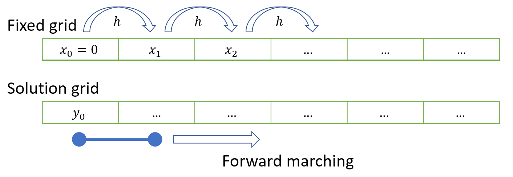

7. Numeric calculus#
This chapter outlines a method that can be used to construct numeric solutions to calculus problems by modelling curves using small line segments. After completing the chapter you should be able to:
Construct a discrete estimate of the slope of a given function or dataset
Construct a discrete estimate of a function from its slope and a single point
7.1. Numeric differentiation#
We begin by recalling the definition of the discrete derivative. If we assume that points on the curve are labelled using subscript notation:
then the slope of each line segment is given by the following formula, as illustrated by the figure:
If we want to calculate the slope of many line segments it is tedious to do the calculations by hand. However, we can use Python to produce the results for us.
Generate the data
In the following example, we will generate results for the curve \(y=x^2\) on the interval \([-1,1]\) taking a common difference \(h=0.1\).
First, we generate the \((x,y)\) data. We can use the arange function to create the list of equally spaced \(x\) values:
h= 0.1 #step size h
x = np.arange(-1,1+2*h,h) #start=-1, stop=1+2h
y = x**2 #square the x values
plt.plot(x,y,'k-o'); #'k-o' is the plot style (black connected datapoints)
Exercise 7.1
In the code above, why did we define the stopping value as 1+2*h?
Could you edit this code so that it uses linspace instead of arange?
Solution
Recall that in arange(start,stop,step) the stop value is not included, so the last array value will be 1+h. We include this point so that the slope can be calculated at \(x=1\).
Below is an alternative implementation that uses linspace. You may wish to refer back to Section 3.3 to refresh your understanding of the relationship between the step size and number of points.
h=0.1
a,b=-1,1+h
n=int((b-a)/h +1) #n=22
x=np.linspace(a,b,n)
Note
If you use linspace to generate an array and you wish to find the common difference, this can be done by simply calculating the difference between any two neighbouring values. For example:
x=linspace(1,2,101) #101 values on interval [1,2]
h=x[1]-x[0] #find the difference
Find the differences
To get the differences between neighbouring points we can use the diff function from the numpy library. The number of elements in the difference array will be one less than the number of points in the original array.
Dx = np.diff(x) #these differences will all be equal to h
Dy = np.diff(y) #these differences will vary
m = Dy/Dx #two numpy arrays can be divided 'elementwise'
The code below puts the data into a nice visual format by using the pandas library. We have to drop the extra \((x,y)\) value that we introduced for calculating the difference at the right-hand end of the interval. This can be done by “slicing” the x and y arrays. For a reminder of how this works, see Section 4.3.
d = {
'x': x[:-1], #Slice excluding the last value in x
'y': y[:-1], #Slice excluding the last value in y
'diff(x)': Dx, #x differences
'diff(y)': Dy, #y differences
'm': m}
df = pd.DataFrame(data=d)
df.round(2) #give results to two decimal places
| x | y | diff(x) | diff(y) | m | |
|---|---|---|---|---|---|
| 0 | -1.0 | 1.00 | 0.1 | -0.19 | -1.9 |
| 1 | -0.9 | 0.81 | 0.1 | -0.17 | -1.7 |
| 2 | -0.8 | 0.64 | 0.1 | -0.15 | -1.5 |
| 3 | -0.7 | 0.49 | 0.1 | -0.13 | -1.3 |
| 4 | -0.6 | 0.36 | 0.1 | -0.11 | -1.1 |
| 5 | -0.5 | 0.25 | 0.1 | -0.09 | -0.9 |
| 6 | -0.4 | 0.16 | 0.1 | -0.07 | -0.7 |
| 7 | -0.3 | 0.09 | 0.1 | -0.05 | -0.5 |
| 8 | -0.2 | 0.04 | 0.1 | -0.03 | -0.3 |
| 9 | -0.1 | 0.01 | 0.1 | -0.01 | -0.1 |
| 10 | -0.0 | 0.00 | 0.1 | 0.01 | 0.1 |
| 11 | 0.1 | 0.01 | 0.1 | 0.03 | 0.3 |
| 12 | 0.2 | 0.04 | 0.1 | 0.05 | 0.5 |
| 13 | 0.3 | 0.09 | 0.1 | 0.07 | 0.7 |
| 14 | 0.4 | 0.16 | 0.1 | 0.09 | 0.9 |
| 15 | 0.5 | 0.25 | 0.1 | 0.11 | 1.1 |
| 16 | 0.6 | 0.36 | 0.1 | 0.13 | 1.3 |
| 17 | 0.7 | 0.49 | 0.1 | 0.15 | 1.5 |
| 18 | 0.8 | 0.64 | 0.1 | 0.17 | 1.7 |
| 19 | 0.9 | 0.81 | 0.1 | 0.19 | 1.9 |
| 20 | 1.0 | 1.00 | 0.1 | 0.21 | 2.1 |
Exercise 7.2
Plot \(m\) against \(x\). Are you surprised by the shape of the plot?
Solution
Code to produce the plot is given below. We have to drop the last datapoint from x as this array has one more value than array m.
plt.plot(x[:-1],m,'k-o');
The result is a straight line. You should not be surprised by this, since the slope of the function \(y=x^2\) is described by \(y=2x\), which is linear.
Exercise
Exercise 7.3
Find and plot the slope of the logistic function that you plotted in Exercise 3.3. You may choose any step size that results in a smooth curve, and any interval that shows the overall shape of the curve.
Solution
The below solution uses linspace, which is more convenient than arange in cases where we do not need to be strict about the step size that is used:
t=np.linspace(2,4,1000) #make the t data
t0=3; C=75; r=75;
x= C/(1+np.exp(-r*(t-t0))) #make the x data
m=np.diff(x)/np.diff(t) #slope of each segment
plt.plot(t[0:-1],m);
7.2. Numeric integration#
We can also implement the reverse of numeric differentiation in Python. We start by writing out an iterative formula based on the definition of the discrete derivative, given in (7.2). Taking \(h\) to be the common \(x\) difference gives
This gives us an iterative scheme from which we can construct the \(x\) and \(y\) data using a loop-based approach, as illustrated in the schematic representation below:

Example
We will demonstrate by applying the method to numerically integrate the following problem:
The slope is defined by \(m_k=3 x_k\) and so the problem may be written as follows:
The code below implements this in Python by using a for loop to obtain a solution on the domain \([0,2]\) with a step size of \(h=0.5\)
h=0.5 #step size
n=5 #number of datapoints
x=np.empty(n) #pre-allocate array x
y=np.empty(n) #pre-allocate array y
x[0]=0 #initial value
y[0]=1 #initial value
for k in range(n-1):
x[k+1]=x[k]+h
y[k+1]=y[k]+h*(3*x[k])
Exercise 7.4
Make the following changes to the above code:
Adjust the interval to \(x\in[-2,2]\) and the step size to \(h=0.01\)
Change the known value to \(y(-2)=1\)
Plot \(y\) against \(x\). Are you surprised by the shape of the curve?
Solution
h=0.5 #step size
n=int(4/h+1) #number of datapoints
x=np.empty(n) #pre-allocate array x
y=np.empty(n) #pre-allocate array y
x[0]=0 #initial value
y[0]=1 #initial value
for k in range(n-1):
x[k+1]=x[k]+h
y[k+1]=y[k]+h*(3*x[k])
plt.plot(x,y);
The result should not be surprising. If we integrate the problem \(y^{\prime}=3x\) then we obtain a quadratic, \(y=3x^2/2\)
Exercise
Exercise 7.5
Consider the following equation, which models exponential growth:
Numerically integrate this problem on the range \(t\in[0,20]\) , taking a step size \(h=0.02\).
Solution
h=0.02 #step size
n=int(20/h)+1 #number of datapoints
t=np.empty(n) #pre-allocate array x
x=np.empty(n) #pre-allocate array y
t[0]=0 #initial value
x[0]=1 #initial value
for k in range(n-1):
t[k+1]=t[k]+h
x[k+1]=x[k]+h*(0.1*x[k])
plt.plot(t,x);
7.3. Coupled systems#
We can also apply the method to coupled systems. For example, consider the followiong problem:
By applying the discrete differentiation formula, we obtain:
Rearranging into iterative form gives:
This is the coupled system that you solved in Section 5.3, taking \(h=1\).